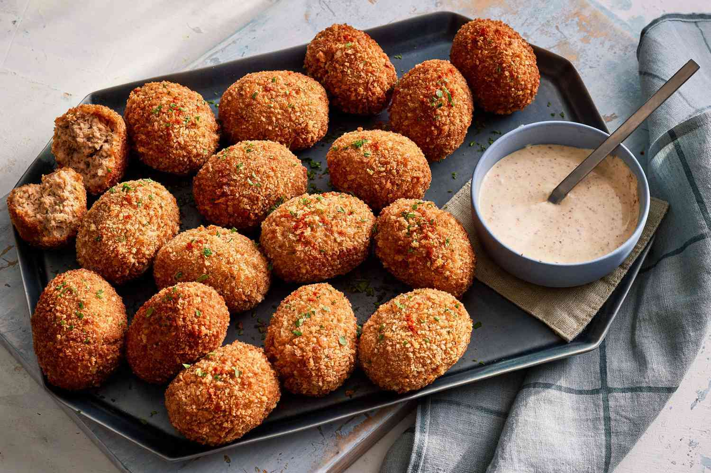

Boudin balls are a specialty of Lousiana. These tasty balls typically consist of boudin sausage meat that is shaped into balls, battered, rolled in breadcrumbs, then fried in hot oil. Boudin sausage is made with cooked rice, onions, green peppers, ground pork, and various seasonings.
Meal prep time : 2 hours 45 minutes
Servings : 12